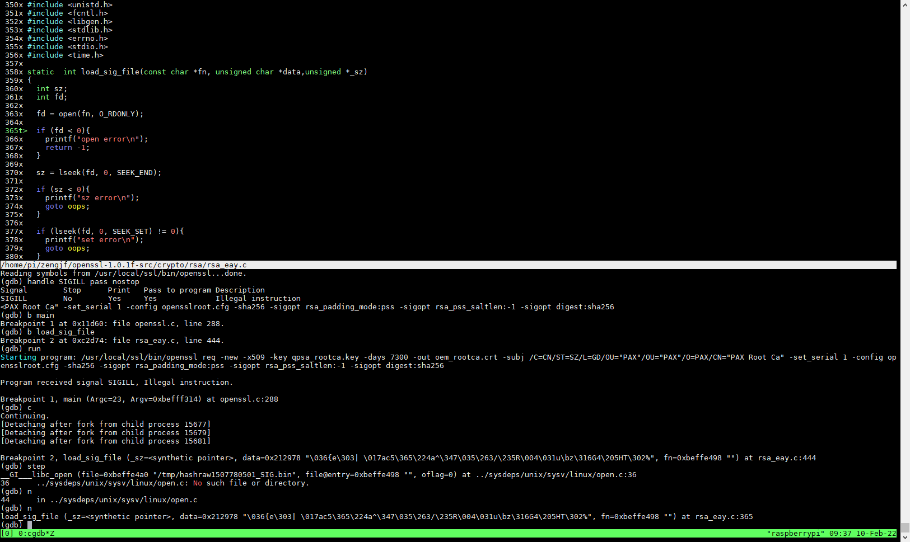

cgdb
cgdb提供命令行代码预览的gdb
参考文档
https://cgdb.github.io/
install
sudo apt-get install cgdb
使用简介

skip SIGILL
(gdb) handle SIGILL pass nostop
(gdb) set args req -new -x509 -key rootca.key -days 7300 -out oem_rootca.crt -subj /C=CN/ST=SZ/L=GD/OU="AAA"/OU="AAA"/O=AAA/CN="AAA Root Ca" -set_serial 1 -config opensslroot.cfg -sha256 -sigopt rsa_padding_mode:pss -sigopt rsa_pss_saltlen:-1 -sigopt digest:sha256